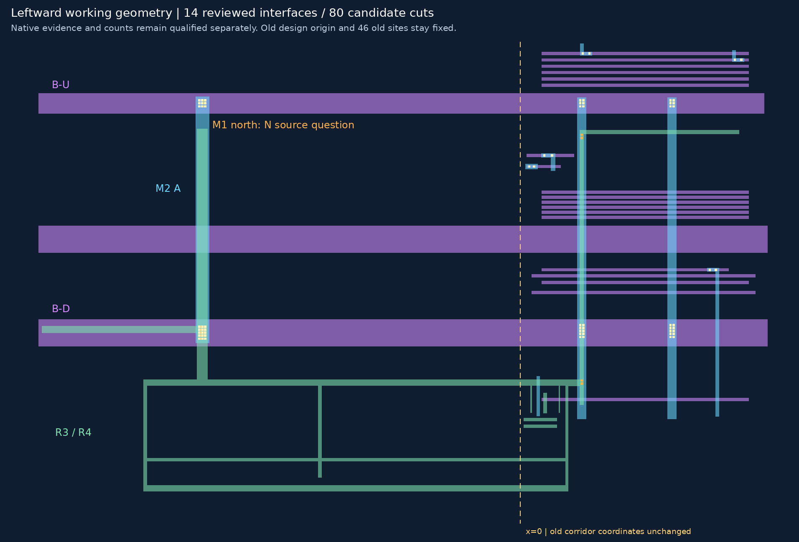
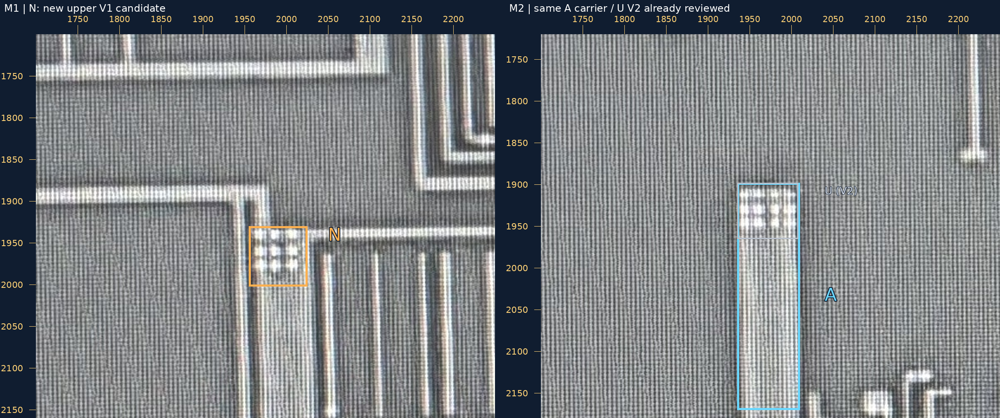
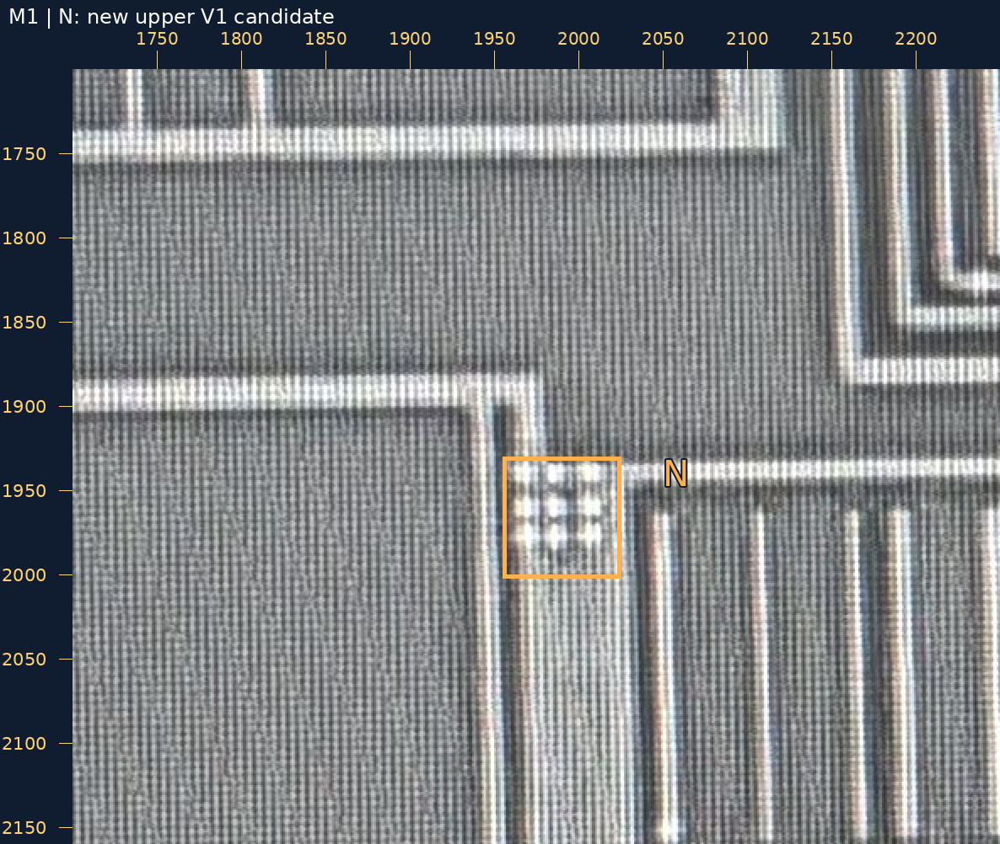
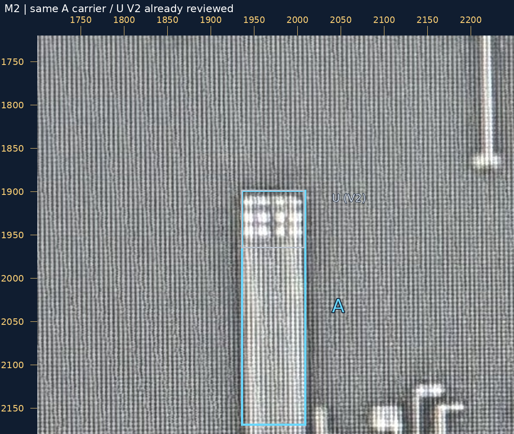

Q1 的 V1 接 A、U 的 V2 接 B-U、D 的 V2 接 B-D 均已保存原话并接续到工作候选。扩展分开执行：只扩显示范围 → 补旧 M1/M3 连续部分 → 加 M2 A → 加三组完整候选孔 → 补北向 M1。
35 条金属候选，14 条已审局部接口，80 个设计候选孔。原11接口与46孔中心保持。新增5×2、3×3、5×3是 AI 完整阵列候选，实际孔数与精密尺寸未确认；整组设计包围通过不等于照片实测或工艺 DRC 通过。
画布显示范围从 [0,0,780,1440] 左扩到 [-1500,0,780,1440]；坐标原点与所有旧坐标保持，未平移或压缩旧模型。负 x 是设计坐标，不是照片坐标。
虚线为旧 x=0。完整几何 SVG · 大图 · 切换 M1／V1／M2／V2／M3

M1 上方橙框 N 的孔组，是否为 V1，并接到 M2 图蓝框 A 的同一条宽竖向金属？M2 顶端 U 的 V2 已审，本次不重问，也不要求孔数或逐孔重合。
可回复“N：是 V1，接 A”，或指出身份／承载修改处。北向 M1 的连续部分已补成候选，N 的孔尚未加入工作接口；此前14条连接不用再确认。
两层图片各用原生坐标、宽邻域，未互相投影。M2 A 图里的 U 是已审 V2 参照；不要求在 M2 照片上看见 V1，也不要求 N 与 U 上下逐孔重合。两层并排大图



U／D 原话 · 当前恢复请求 · N 裁决请求 · 本轮检查
中部 M3 仅交叉，没有 V2 事实便不连接。其余短指、细邻线、全部横向出口及完整网络未收口。source_to_design_transform=null，geometry_adopted=false，net_edges=[]。README/site/gh-pages 保持。本页资源和 PNG 已检查，浏览器交互未实测。